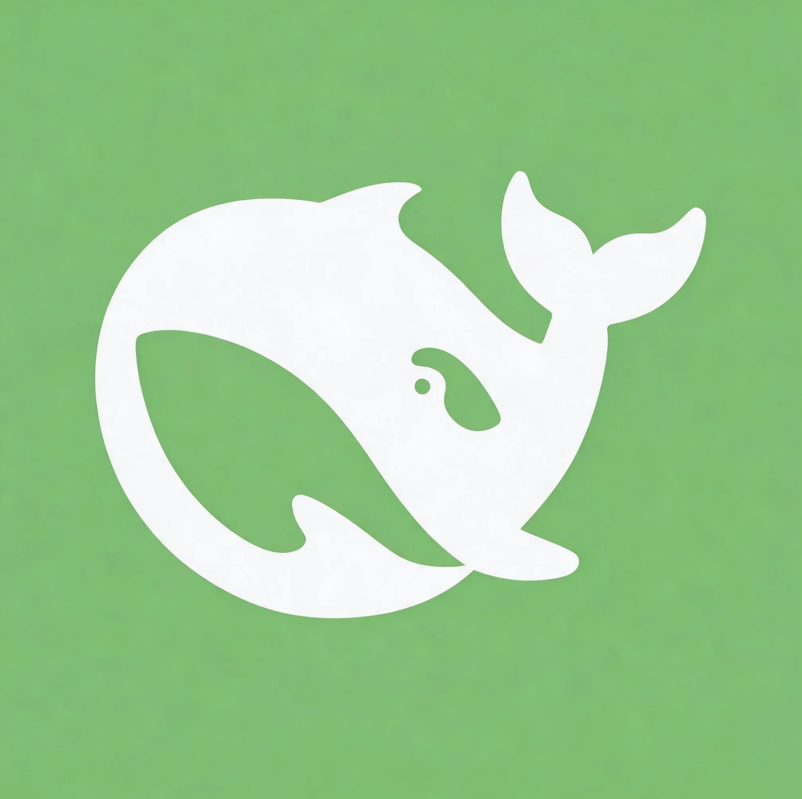

彩色便当 Bento · 精修版
完整三态旅程 · 悬停/按压可试微交互 · 确认后按此用 SwiftUI 实现
STATE 1
未运行（初始态）
↔ 可调整大小

DeepSeek Harness
本地服务控制台
v1.1
服务未运行
点击下方「启动」开始
127.0.0.1:3080
▶
启动
START
⏻
退出服务
STOP
🌐 在浏览器中打开
⌘O
⟳ 刷新状态
⌘R
STATE 2
启动中（过渡态）
↔ 可调整大小
DeepSeek Harness
本地服务控制台
v1.1
正在启动…
等待端口就绪
12s
/ 最长 90s
127.0.0.1:3080
启动中…
STARTING
⏻
退出服务
STOP
🌐 在浏览器中打开
⌘O
⟳ 刷新状态
⌘R
STATE 3
运行中（完成态）
↔ 可调整大小
DeepSeek Harness
本地服务控制台
v1.1
服务运行中
已运行
2 小时 13 分
· 响应正常
127.0.0.1:3080
⧉
▶
启动
RUNNING
⏻
退出服务
STOP
🌐 在浏览器中打开
⌘O
⟳ 刷新状态
⌘R
✦ 本版精修细节
补齐三态旅程：未运行 / 启动中（琥珀色+转圈）/ 运行中，录屏叙事完整
同心圆角：窗口 30px = 卡片 16px + 边距 14px，视觉严谨
图标放进磨砂圆形徽章，播放键做光学校正（右偏 3px）
状态灯呼吸动画：运行绿 / 启动琥珀脉冲 / 停止沙灰
地址胶囊可点击复制（⧉ 提示），等宽数字不跳动
运行中显示「已运行 2 小时 13 分」时长
快捷键提示 ⌘O 打开浏览器 / ⌘R 刷新状态
禁用态统一沙色，与奶油底和谐；按钮按压缩放 0.96
窗口支持调整大小，有最小尺寸保护